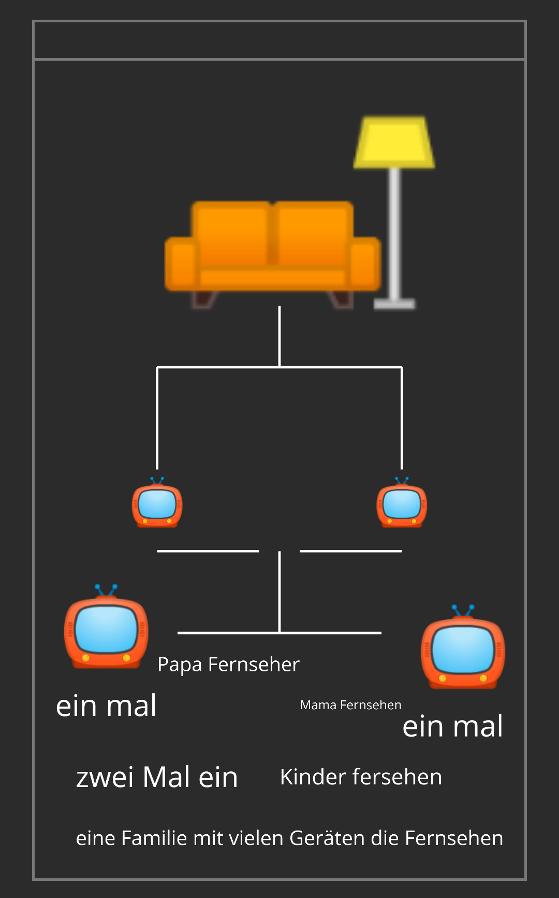

�'
(1
also die hunderter tafel begint mit feld null der flache
1 unterzlteileung 10 ein einer reihe oben unten
100
wire flow erstelle ein neue arbeits fläche , call
abot.blank.dvg
default.svg
untilted.svg
Deckblatt.svg
launcher.svg
main.svg
oder simple ne nummer aks tele text begint bei 100
100.svg : index.html : Startseite ROOT
199.svg : index.html : Startseite ROOT von First Child 199 - ???
000.svg : Impressum.html : Telemedien gesetzt muss eine Impressum auf öffentliche Internetpräsenz
000.svg : Chat.html :
000.svg : Informationen.html : Information zu mit uns über
000.svg : Sitemap.html : Seiten Verzeichnis baum strucktur
üì∫ sender : Programm : About : Das bin ich , Startseite Index.html
üì∫ sender : Programm : Meine Entwicklung Kita / Vorschule bis Einschulung
üì∫ sender : Programm : Meine Entwicklung von der ersten klasse bis zum ersten Erreichen von 10 Schuljahr mit oglder ohne Abschluss
üì∫ sendet : Programm : Meine Entwicklung
10 jahre schule 7 Klasse abagn zeugniss ohje Abschluss
10 Jahre schule Mitlere reife MSA
von MsA bis Abitur
von Abotur bis Stzdieun Beruf Ausbildung Soziale Jahre
von Arbeit bis arbeoz
von bis Qualifizierten , Weiterbilungen
von bis Erhalt Titel , Meister, Dockur Prof etv
von 1 - 10
von 10 - 18
von 18 - 99
annahme :
kundet erhalten bereits im kleinkindhaltet ein multiedoa Gerät nenen wor es mal Smartphone Geschmäcker sind unterschiedlich und so gibt es viele unterschiedliche Designs dann will der eine lieber spiel. der andere eher schreiben malen oder oder oder
ich gebe zu das sind sehr viele Varianten mache wor es zum schluss
einfach und sagen mal nur 2 Operation System vetgleichen wor mal apffel kit Birnen
Also Pepe & Cat beide selben alter
Pepe Ist gruppe apffel 0
Cati ist gruppe birne 1
wer welche Gruppe machen wir mal einfache zufahl also zwischen 0 und 1 50/50 pepe zieht los nummer0 cati los numme 1
Pepe : War sparsam & Oma Opa Mama Papa Woenachts man und moch eonigetebr haben mit pepe abgemacjt wenn er Schaft so und so voel in drr und der zeit dann erhalter von jedem etwad obem drauf das ziel von pepe 1000 einer Wähungs einheit z.b 1 € summam getrchent 1000 € bis zum Weihnachtsfest wollte er sparen erreichet das hat er sich geschworen am neuajrars fest bis weinacht sind das ca. 365 tage 1000 gezeilt durch 365 tage woe vile euro musste pepe. tag sparen sich erarbeit entdeckt
Cati : war nicht weniger clever sie verbamd gebustag mit weinachten zusamm ihr ablgumemtee waren nixht zu woedr legen den. Cati hat 7 vor weonachten gebursteg. da ist es doch logisch 7 zltage zu warten um dann Doppelt abzugreifen , Oma Opa Mama Papa etc erkannten nicht woe schlau das vonncazi ost den so wsr ostern zahnnfehr tqdche.geld etc was sie das ganze jahr uber nicbt hat spatenussen , von 365 Tagen wartet cati nur 7 tage auf ihr ❤️ wunsch die restliche Zeit verbrachte sie voel im kino etc. na wer hat das kleine ein mal eins der wortschaft emdeckt
Cato bekamm von
Oma Opa Zeugnis gelt , immal woeder Tascheen geld
Mama Papa Taschegeld ein mal doe woche 5 € hier und da mal was fur unterwegs zum maschen essen trigen an wamdertagen under im sommer beim baden
fur jeden zahen gab es 1 eurovvo. Grosetltern Eltern Und da mama 5 Schwester hat warfubr ups schon woedr ein zahm vetlore. 7 euro verdientanuss nur lange genug am zahne wackelnnund ziehn wachsen ja eh kch und fallen wenn es so weit ost von selber raus und so luebte sie an allen tagen in saus und praus niand dand denntrick herraus am Geburtstag war bis zum weinachts abend nutzte sie hiere vorrate so das nicht ein tag verging wo sie warten musste ,
doch eines jat soe nicht bedacht der Weihnachtsmann hat mit gedacht und vermerkt sich das geht sja so nicht
so traffen sich alle am abemd davor und horten gespant was dr weinachtsmann so zu berichten hatte , keiner dr nicht laut lachte und sich dachte na warte mal ab und so dachte sich die cativnix als flix zum baume und staunte da war nix , naaj ws dengt ihr woll was da auf einmal los wahr siensahnsichndochnim rechtnund uber haubt wahr doch auch drr Geburtstag dabei , Cati druclte schon die ersten trännen , in doesemomen sprangen aller aus ihrem Versteck man hat doe soch erschreckt , Alls selbst der weinachtsmman da stannnd mit tompete und party hit und schoe alllet gute zum Geburtstag und weinanchten , da merkte sie es auch sie wurde ver arscht, dieser streich ist eohl gelungen Denn nochbheute ersahlt soe es den jungen im Hauswirtschaft grund kurs wehr hatte gedacjt das sie wortschaftahteacht und studiette und und lernte bis soe erreichte was sie wollte sein eine Professorien und das ist ais ihr geworden und morgen begint ein neier studek gang was horenndie jungen wohlvdann genau wie sie mit etwas list und mahrltematik ihr lieblings hamdy bekamen
es sollte ja genu das sein kostete.blox 10 × 1000 Schein wahritedels stein und in golden farbe , Sie besotzete noch heite das eine , fujr 10000 scheine halt das auch nur ein leben lang wenn man. sorgeam und bedacjt damit umgeht in gold ost jeder kratze und beule zubsehen nur doe Doaten und Ruboen. sond in den jahren vetloren geganen , und wenn sie einmal nicht mehr unterichten kann dann wird sie sich mal doe zeit nehek und den eien odr amdren stein selbsz einsetzten und zurecht formen den Pepe ist dr Geploge und ihr Fruen npch heute drer lemnt prte da liegen doe wertfolsten szeine eonfach im sand und wenn doch keine dann sehen soch doe neoden eben woanderes dananch um
achs os apfel und Birnen ämh kuru zusammen fasseung
egal ob apfel odrer birne wer leistung will zahlt nich auzomatich viel und wer viel bezahlt , hat ewentuell an leistung gespart fur aussehen so ein kramm
so gibz es herate fur ein Apfel und ei und schlagen doe Brine zu brei den Das Ei ist Frei von jeder atidüde , so ganz unbeschert weil keine die tur zuhält um mit der ausgestreckt hand sondetwumsche micht nur erfand sondten auch bediente ist wie pelz und dem wolf nur weil wolle drnn jlheost nicht das wolle ist dr wolf sehr listig ist und so lommenwor zum ende dieser legende von Pepe & Cati dem Ein Und dem Wolf , Wollen gibt es nichte mur die wolle der schafe wenn du etwas haben mochtest dann rolle nicht mit den augen das wollen wor nicht ups das mochten wor nicbt und so geht diese Diskussion undendlich lange wenn sich zei streoten freut soch der dritte und der mächste und nävjste immer so wroter und weoter bis zim End of Life Abkürzung
EOL
woire flow
share
tmp
uuid= 3750
id= blank
name= blank
class= about
link= about:blank
���������
��
�������
�(2<FPZd
ϨьҰԔל
✐⫸⭜⭦
Text danach!
Index of Meine Ablage bei Google / Drive / Cloud mein Account beo Google
Bildlich gesprochen
Meine Ablage gleich eine Welt , OK wo befinden sich zum Beispiel die Bücher in einer Welt , bedenke das hier ist deine Welt also können sie auch einzeln über all in deiner Welt verteilt sein
In meinr Welt könnte das eine Bibliothek sein
Also ein Ort sagen wir Mal ohne Gebäude darum und weil ich Natur mag liegen sie auf dem Boden ungünstig , ich mag Cafe OK meine Bibliothek ist ein Bücher Cafe , draußen kann man sitzen und bei Kaffe und was auch immer in den Kisten suchen entdeckt , man muss kein Gast sein für 150€ kannste jedes Buch kaufen jedes OK im Laden ist Ordnung die halbe Miete Last sich besserer reinigen und pflegen in Regalen vom Boden bis unter der Decke , von oben betrachten wie ein Labyrinth , soll so sein damit der Gast sich entspannt in Gedanken auf Gedanken kommt und nach 30 min sieht man ihnen die Entspannung man ihnen fällt oft zu erst auf wie ruhig und gemütlich es ist , da hilft die Lampe Mal runter gute luftung so daß es immer constat tut den Bücher genauso gut , Papier ist empfindlich hier Finden sich Bücher die um einiges älter als einen Mensch werden kann sind , und so wie man ihnen den Stress ansieht so ergeht das auch den Bücher stellen sich Mal vor sie müssen 400 Jahre gut aussehen und durchhalten hä hä Google für Anfänger macht ein euro 50 der Heer und begehen sie uns Recht bald wieder morgen ist Sonntag und wie immer mit Selbst gemachten Küchen im Programm , am Abend eine Vorlesung von und zu über das Thema Medien Kompetenz und Kompetenzen , und was ist über Haupt Skills bin ich wirklich Fähig meine Eigenschaften zu beurteilen , ein Test Programm mit Vorlagen von Google ein Konzept für den richtigen Umgang mit den Telemedien , montags mit Gesetzen in der Heute Sendung , Hier im ersten deutschen Fehrsehen mit zwei sehen sie mehr im aktuellen Kinder fersehen … 📺 mit fluffy & meine 📺 fersehen & dem Papa Fernsehen & der Fernseher in 📺 📺 hier Mal eine Skizze beziehungsweise eine Beziehungs Diagramm
All Stammbaum und der Geschichte den biene. Und Blümchen , also Sex ohne Verhütung männlich weiblich v
Fortpflanzung Mai ihr versteht so das war der erste Eintrag in meinem Persönlich Notizen Buch
Heute ist Sa., der 26 September und es ist 20:52 Uhr , so seit leise ich bin im übrigen die Lampe nicht das Sofa / Couch / Film ab Licht aus , machen bitte bestätigen bitte den Licht Schalter wir machen es uns jedzt alle 6 gemütlich 4 in uns Bestimmen ich und Couch erfreuen uns daran
